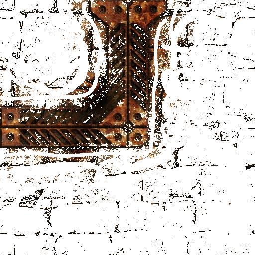
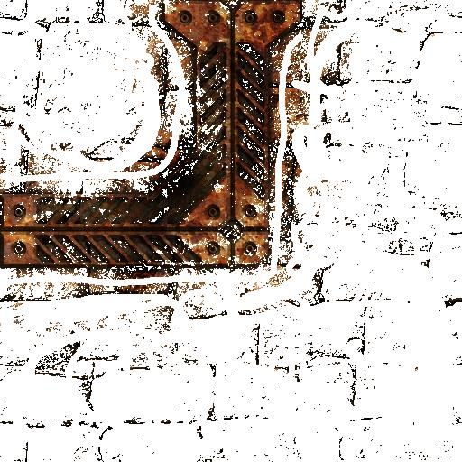

CMP 717 - Practical 3: Segmenting images using Markov Random Fields
Problem 1.1
In this part, I have used 4 different images. I tried to choose them with different features. Below you can see the images, their bg/fg maps and algorithm results.
| Lena, similar colors, distinctive textures | Caterpillar, distinctive colors, fuzzy outline |

|


|
| Kingfisher, some color similarities, distinctive textures | Wall, similar colors, similar textures |


|


|
Checking histogram plots of 4 scenarios reveals that the method relies mostly on color distribution of the foreground/background areas. If various areas of the images are similar colorwise, the output results are not satisfactory.
I thought the hardest scenarios were Wall and Caterpillar but caterpillar turned out better than I expected. Since I only chose body of the caterpillar as foreground object, model discarded thin hair around the caterpillar.
For caterpillar, since the texture and color of thin hair around the caterpillar is very different from rest of its body and the background, it is easy to select it as background and background.
For wall, whole image is textured and textures are somewhat similar. The general color structure and intensities are also similar. These two properties make this image a hard case for general gaussian mixture algorithm. I have altered foreground/background map to improve the performance, but it hasn't improved by a whole lot; wall texture can still be seen in the foreground extracted image, and frame isn't crisp clear, either.
 

|
Conclusion
In the first part we have seen that K-SVD is dependant on initial parameters and their accordance to the input image. If correct parameters are selected, improvements against DCT with overlap method can exceed 1.5dB mark. But this property is a double edged sword, if bad parameters are selected, then the results are inferior to DCT with overlap method.
On the second part we have seen that K-SVD depends heavily on training data. The bad performance of external training data is mainly caused by limited dataset and low iteration counts. If training data was large enough and we could optimize it for a long time, better results could be acquired from external dataset, but the need to find optimal dataset for each input image is an ill-posed problem.